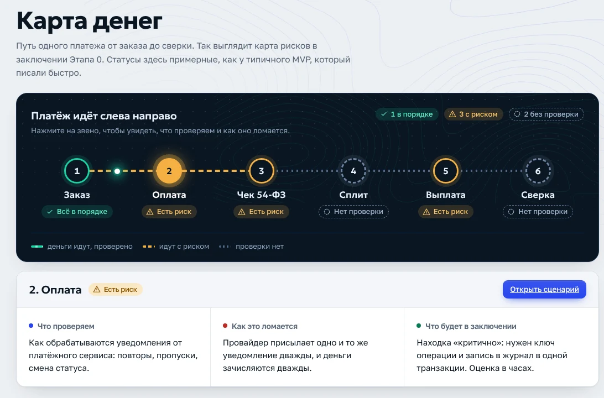

Карта денег
Путь платежа от заказа до сверки, шесть звеньев. У каждого статус: в порядке, есть риск или проверки нет. Нажмите на звено и увидите, что проверяем и как это ломается.
Зачем. Вы сразу видите, где риск, ещё до разговора о цене.
Открыть экран